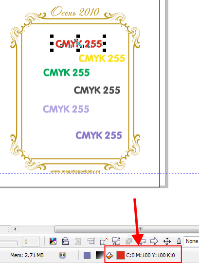
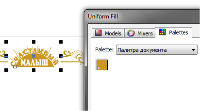

CorelDraw X5 проблемы с цветовыми палитрами
new-art21 / 10.10.2010, 00:16/00:41
Форум:
Уже не знаю где искать. Как только применяю цвет Cmyk с цветовой палитры, он превращается в CMYK 255. Уже брала цветовую палитру из Corel 12 версии - ничего не помогает. И цветовые профили меняла... Выход только руками вбивать каждый цвет. Как только беру его из палитры документа - тоже самое. Что делать? CMYK 255 для типографий недопустим?
Вторая проблема с Pantone-цветами - один Pantone для всего ставлю, но некоторые объекты теряют цвет или превращаются в Pantone (1), Pantone (2), Pantone (3)...т.е. цветоделение на разные формы одного Pantone-цвета.
Что делать? Так нельзя работать для типографии?
255 это система исчисления. То есть не 100, а 255 градаций. Разница только в этом.
А профили то зачем менять? Почитайте для чего профили, у Вас явное недопонимание для чего они и на что влияют.
Про пантоны... скорее всего вы берёте разные цвета, один из палитры пантон, а другой например из палитры документа или ещё откуда. Для типографии вариант с Pantone (1), Pantone (2) и т.д. недопустим! обязательно должен быть один канал с одним пантоном.
Для полиграфии сожно использовать только CMYK. Как понимаю, CMYK255 появляется из-за недоработки программы. Поэтому проверяла все, в том числе и профили, которые к CMYK255 никакого отношения не имеют.
Из-за этой проблемы не могу работать в типографии.
Система Window7, 64bit, CorelDrawX3 не ставится. Купили CorelDrawX5, не можем избавиться от появления CMYK255. Выход пока один: каждый объект перекрашивать через панель инструментов (однородная заливка), но только не через палитры CMYK. Времени уходит намного больше.
Дома Windows XP - проблема та же. Service Pack 1 ставила - не помогает.
Может есть выход?
Pantone одинаковый брала. Проверяешь в макете - все хорошо. Копируешь в раскладку - много Pantone одинакового номера только PANTONE 131 C (1), PANTONE 131 C (2). Пришлось на другом компьютере все Pantone перекрашивать (в Corel X3).
В CorelDraw работала 4 года - проблем не было, а тут не могу понять причину.
Помогите, пожалуйста!
Если вы не поняли то повторю более доступно — CMYK 255 это и есть CMYK. Это как миллиметры и пункты... единицы измерения разные но на реальный размер не каким образом не влияют.
Другой вопрос — почему это возникает именно в Х5. В предыдущих версиях была такая настройка. Где она сейчас трудно сказать.
А про пантоны — у меня нет ваших файлов, нет аналогичных проблем. Трудно сказать что там у вас.
П.С. Конечно проще всего сказать что всему виной недоработка программы. Гораздо сложнее разобраться в вопросе. На своём опыте общения на форумах знаю что 90% проблем - человеческий фактор!
Покажите файл где есть СМИК255 и разные одноимённые пантоны.
Вот файл. CMYK 255 во всех документах, Pantone не везде дает сбой.
Если сохранить в более ранней версии - Pantone местами превратиться в черный. Что же происходит?
Но главное CMYK 255, с ним в типографию не принимают.
1. Открыл ваш файл и совершенно ничего не делал.
Результат:

Смиком 255 и не пахнет, ибо и не должно быть его в 15 версии Корела! Ещё раз скажу 255 ЭТО ВСЕГО ЛИШЬ система исчисления!!!! Если в типографии не берут, ссылаясь на СМИК255 то там сидят ещё те "граматеи"... лучще сменить типографию, ибо такие вот деятели ничего хорошего вам в любом случае не напечатают :D
2. Как я и говорил один пантон из палитры пантона, а другой из палитры документа.
Корел считает их разными цветами, поэтому выводит в разные каналы. Они даже по цвету визуально немного отличаются.

За помощь по вопросу Pantone - спасибо большое!
Поняла, что нужно только из одной палитры цвета брать (не использовать цвета документа).
Относительно CMYK255 от только в сведениях о документе находится. По составу - обычный CMYK. Проблема в том, что его присутствие в сведениях о документе для типографий недопустимы (это одно из основных требований любой типографии).
Подскажите, пожалуйста, если Вы заливаете любой объект из цветовой палитры, в сведениях о документе появляется CMYK255 или это только на моих двух компьютерах так происходит?
Первый раз слышу. Ну, я уже всё сказал по этому поводу выше :D
А на счёт "сведений о документе"... не знаю, никогда им не пользуюсь. :D
какую палитру можно использовать, чтобы в ней комбинировать цвета CMYK и, допустим, PANTONE? Т.к. в Corel X5 цвет PANTONE, сохраненний в палитре документа(например) превращается в неопределенный цвет (код ***, плотность***%).
видимо у автора темы эта проблема тоже?
Зачем вообще что-то комбинировать.
И если так хочется использовать Pantone,
откройте библиотеку - PANTONE process coated, это каталог цветов для триадной (офсетной) печати. В реальной жизни это бумажный веер с образцами эталонных оттисков.
Категорически настаиваю на использовании каталога PROCESS в отличии от SPOT.
Страницы